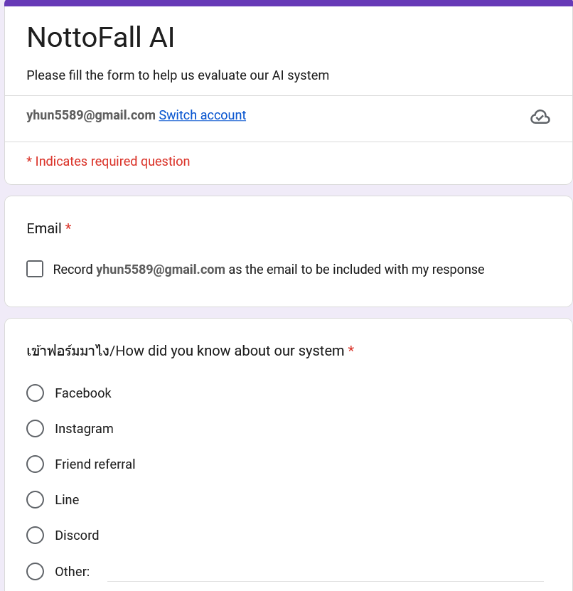
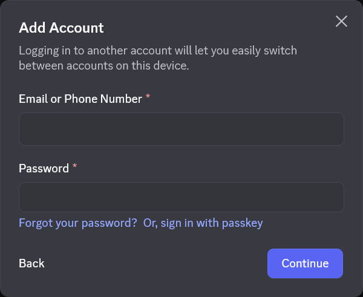
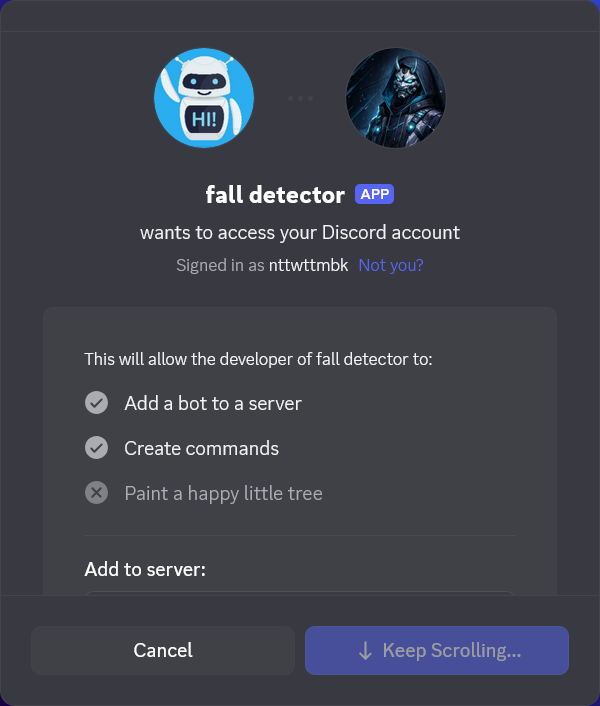
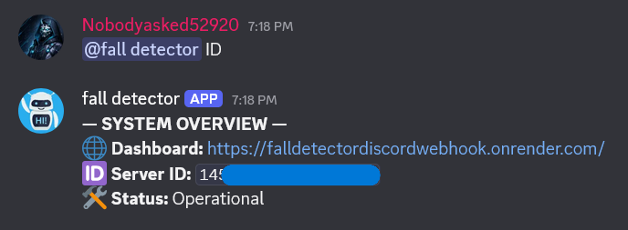
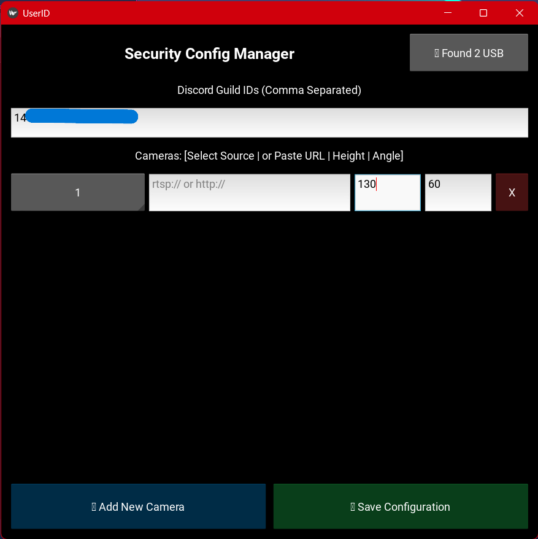
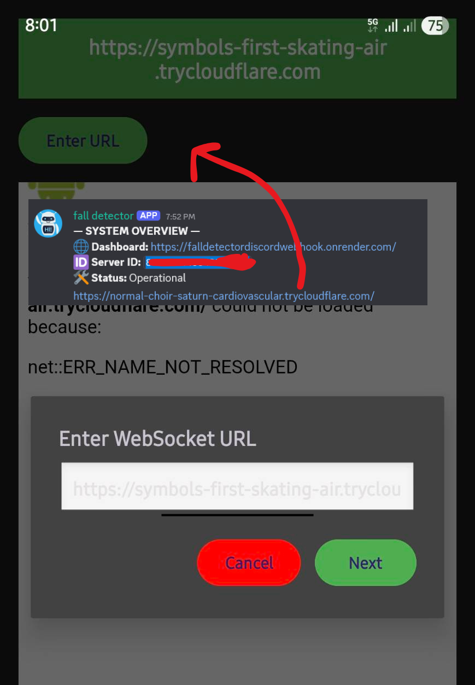

Deployment Protocol
Software demonstration
Environment Setup
Download .exe and .apk file by filling the form

Create account discord
Create a Discord account and server for alert notifications and bot |you can invite as many people as you want|

import discord bot
Invite the Discord bot to your server for alert notifications. And provide the detection server link which can be used in your android app
A unique temporary ID will be generated for your server everytime the detector app is started

Request server ID
the bot and type ID to receive your unique server ID. Save this ID for the next steps.

Unzip the downloaded file and camera setting
Open the file named cam_selector.exe. The camera light will blink for a moment before the application loads. Then, enter the server ID received from the Discord bot and select the camera. For security cameras, provide only the URL of the security camera. Regular cameras can be selected directly without a URL.
After that, select the height of the camera from the ground and the angle of the camera where 90 degrees is for a camera looking straight at the user, while 0 degrees is for a camera looking straight down (vertical).

Press RUN mulcam_server.exe
After completing the setup, click RUN on mulcam_server.exe *This may take some time* to start the server. Wait for the URL to be sent in the Discord server and then paste it into the mobile app.
